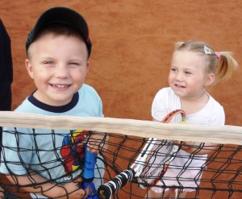

Trénovanie

Tenisová škôlka je určená pre deti vo veku od 3 ½ roka do 6 rokov. Hlavným cieľom je hravou formou podchytiť záujem detí o tenis. Na tréningoch rozvíjame základné motorické zručnosti. Príprava je zameraná na základnú pohybovú prípravu a získanie technických zručností pre ďalšiu súťažnú či rekreačnú hru. Pri tréningoch sú využívané detské rakety, tenisové pomôcky (lopty na minitenis, penové lopty, sieť na minitenis) a mnoho ďalších pomôcok, ktoré prispievajú k rýchlemu zvládnutiu zručností zábavnou formou (programy Baby). Tréning prebieha v skupinách 2 – 6 detí.
Tenisová škola
Našim hlavným cieľom je výchova súťažných hráčov, ktorí sa presadia na národnej a neskôr na medzinárodnej úrovni. Tréningový proces zabezpečujú kvalifikovaní tenisoví a kondiční tréneri. Vychovať úspešného tenistu je dlhodobý proces, ktorý začína už od ranného detstva. Na tenisovú škôlku pre deti od 7 rokov nadväzujú programy Light. Do tréningového procesu sa zaraďuje pohybová a kondičná príprava. Pre staršie deti (od 8 rokov), ktoré chcú zlepšovať svoje tenisové, kondičné a koordinačné schopnosti a majú ambíciu stať sa súťažným hráčom máme pripravené programy Medium. Pre športovo nadané a talentované deti ponúkame programy Profi (pre súťažných hráčov). Ide o kombináciu tenisových tréningov s pohybovou prípravou. Tréningy prebiehajú skupinovou formou, ale po dohode s trénermi vieme ponúknuť aj individuálne tréningy.
V rámci tréningových programov sú zabezpečené aj tréningové pomôcky, lopty a pre najmenších aj tenisové rakety.